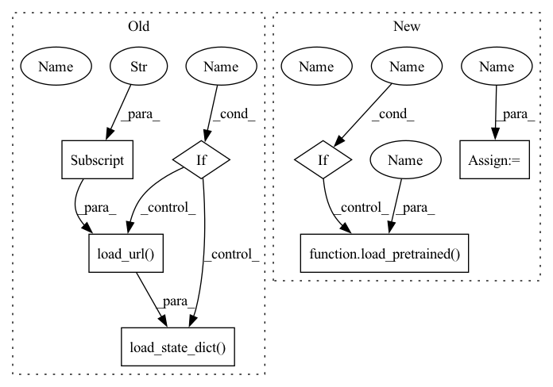

Pattern ID :10306
Before Change
num_init_features=64, k_r=96, groups=32,
k_sec=(3, 4, 20, 3), inc_sec=(16, 32, 24, 128),
num_classes=num_classes)
if pretrained :
if extra:
model.load_state_dict(model_zoo.load_url(model_urls["dpn92_extra"]))
else:
model.load_state_dict(model_zoo.load_url(model_urls["dpn92"] ) )
return model
def dpn98(num_classes=1000, pretrained=False):After Change
num_init_features=64, k_r=96, groups=32,
k_sec=(3, 4, 20, 3), inc_sec=(16, 32, 24, 128),
num_classes=num_classes, in_chans=in_chans)
model.default_cfg = default_cfg
if pretrained :
load_pretrained( model, default_cfg , num_classes, in_chans)
return model
def dpn98(num_classes=1000, in_chans=3, pretrained=False):In pattern: SUPERPATTERN
Frequency: 3
Non-data size: 7
Instances Fragment ID: 36294383
Project Name: feng-lab/pytorch-image-models
Commit Name: 9c3859fb9c5bebd224c2f275b16fe0307300623c
Time: 2019-04-11
Author: rwightman@gmail.com
File Name: models/dpn.py
M Class Name: AnonimousClass
N Class Name: AnonimousClass
M Method Name: dpn92(3)
N Method Name: dpn92(3)
M Parent Class:
N Parent Class:
M File Name: models/dpn.py
N File Name: models/dpn.py
M Start Line: 64
M End Line: 74
N Start Line: 73
N End Line: 82
Before Change
k_sec=(3, 4, 20, 3), inc_sec=(16, 32, 24, 128),
num_classes=num_classes)
if pretrained:
if extra :
model.load_state_dict(model_zoo.load_url(model_urls["dpn92_extra"]))
else:
model.load_state_dict(model_zoo.load_url(model_urls["dpn92"] ) )
return model
def dpn98(num_classes=1000, pretrained=False):After Change
def dpn92(num_classes=1000, in_chans=3, pretrained=False):
default_cfg = default_cfgs["dpn92_extra"]
model = DPN(
num_init_features=64, k_r=96, groups=32,
k_sec=(3, 4, 20, 3), inc_sec=(16, 32, 24, 128),
num_classes=num_classes, in_chans=in_chans)
model.default_cfg = default_cfg
if pretrained :
load_pretrained( model, default_cfg, num_classes, in_chans)
return model
def dpn98(num_classes=1000, in_chans=3, pretrained=False): Fragment ID: 36294382
Project Name: feng-lab/pytorch-image-models
Commit Name: 9c3859fb9c5bebd224c2f275b16fe0307300623c
Time: 2019-04-11
Author: rwightman@gmail.com
File Name: models/dpn.py
M Class Name: AnonimousClass
N Class Name: AnonimousClass
M Method Name: dpn92(3)
N Method Name: dpn92(3)
M Parent Class:
N Parent Class:
M File Name: models/dpn.py
N File Name: models/dpn.py
M Start Line: 64
M End Line: 74
N Start Line: 73
N End Line: 82
Before Change
extra_class = 1 if pretrained else 0
model = InceptionResnetV2(num_classes=num_classes + extra_class, **kwargs)
if pretrained :
print("Loading pretrained from %s" % model_urls["imagenet"])
model.load_state_dict(model_zoo.load_url(model_urls["imagenet"] ) )
model.trim_classifier()
return model
After Change
rInceptionResnetV2 model architecture from the
`"InceptionV4, Inception-ResNet..." <https://arxiv.org/abs/1602.07261>`_ paper.
default_cfg = default_cfgs["inception_resnet_v2"]
model = InceptionResnetV2(num_classes=num_classes, in_chans=in_chans, **kwargs)
model.default_cfg = default_cfg
if pretrained :
load_pretrained( model, default_cfg, num_classes, in_chans)
return model
Fragment ID: 36294400
Project Name: alvinwan/nbdt-pytorch-image-models
Commit Name: 9c3859fb9c5bebd224c2f275b16fe0307300623c
Time: 2019-04-11
Author: rwightman@gmail.com
File Name: models/inception_resnet_v2.py
M Class Name: AnonimousClass
N Class Name: AnonimousClass
M Method Name: inception_resnet_v2(3)
N Method Name: inception_resnet_v2(2)
M Parent Class:
N Parent Class:
M File Name: models/inception_resnet_v2.py
N File Name: models/inception_resnet_v2.py
M Start Line: 321
M End Line: 335
N Start Line: 321
N End Line: 331